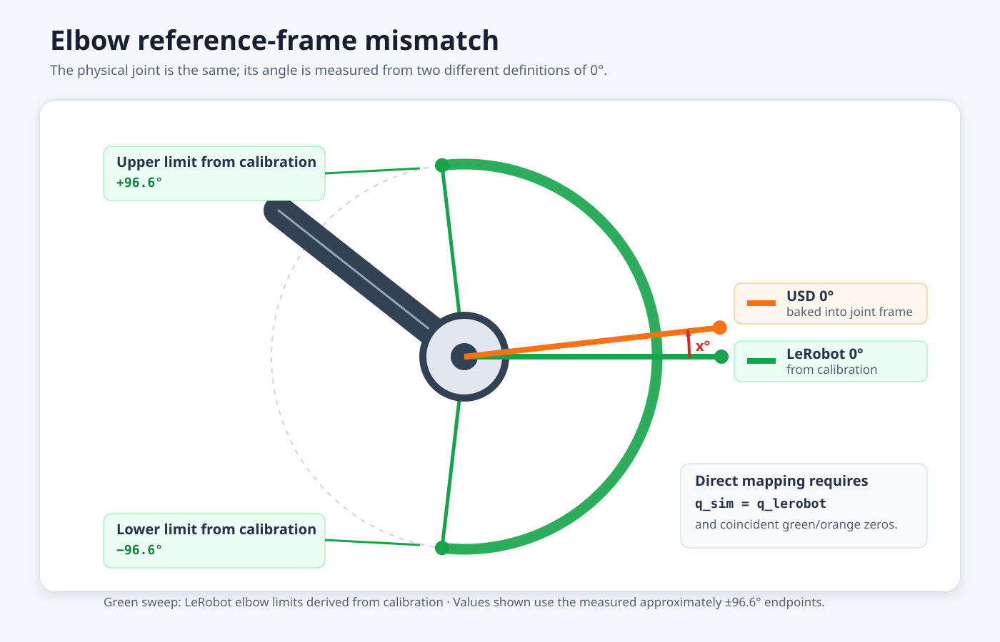

What Is Sim-to-Real?#

Sim-to-Real with Unitree H1#
What Do I Need for This Module?
Nothing — this module is theory-only.
Learning Objectives#
By the end of this session, you’ll be able to:
Define sim-to-real transfer and its goals
Identify the four major categories of sim-to-real gaps
Explain why transfer is difficult even with high-fidelity simulation
Sim-to-Real Defined#
Sim-to-real refers to the process of training a policy in simulation and deploying it on real hardware. The goal is a policy that performs well in the real world despite being trained entirely (or primarily) in simulation.
Simulation Evaluation in Action#
Watch this policy attempt the vial-to-rack task across different simulated scenes. The external camera is on the left and the wrist camera is on the right. Notice both the successful placements and the failures.
The Sim-to-Real Gap#
The sim-to-real gap is the performance difference between simulation and reality. A policy achieving high success rates in simulation may perform significantly worse on real hardware.
Warning
The sim-to-real gap is often larger than expected.
And while colloquially we may discuss “the gap” as if it’s a single entity, the gap is a complex combination of gaps in sensing, actuation, physics, and modeling.
Zero-shot transfer is difficult, so avoid assuming a policy will “just work” on real hardware without systematic testing and iteration.

The source domain is where we train; the target domain is where we want the policy to work.#
Sources of the Gap#
You can teach the policy to handle variation, make simulation closer to the real setup, or combine both. Choose a change that addresses an observed failure, then compare under the same test conditions.
Select a gap in the diagram to explore its examples.
Modeling Gap Examples#

Robot geometry. Differences in link dimensions or joint placement can change the robot’s pose.#


Joint reference frames. Different definitions of zero can produce different poses for the same joint angle. The limits shown are an example, not calibration targets.#
Select either image to view it at full size.
Explore the Perception Gap#
Appearance differences can contribute to missed grasps or reaches toward empty space. Similar symptoms can also come from calibration or action execution.
Use the comparison below to inspect rack edges, hole shapes, and fixed gripper features. Adjust Sim opacity, switch to Side by side, or use Toggle real / sim to alternate between the images. You can also load your own saved image pair; the files stay in your browser. No camera stream or robot connection is needed.
Saved wrist images: real and simulated
Real image on the left; simulation on the right. Both are 640 × 480.


This example shows perceptual differences between simulation and reality for our vial-to-rack task. What do you notice is different?
Here’s the real wrist view beside our perception-tuned simulation. Compare the lighting, textures, and edges.
How we adjust the ovrtx camera response
The base vial scene configures grading and tone mapping through
SO101OVRTXRendererCfg.camera_responses; DR adds film grain. The profiles live in
source/sim_to_real_so101/tasks/camera_profiles.py. The renderer in
source/sim_to_real_so101/utils/ovrtx/renderer.py authors response
attributes on each camera’s render product, so wrist and external views
can use different settings. These are appearance approximations designed to close the perception gap. Consider how you might tune or randomize parameters like this for other tasks.
Setting |
Wrist camera |
External camera |
What it controls |
|---|---|---|---|
|
|
|
Per-channel image gain. |
|
|
|
Midtone response. |
|
|
|
Color intensity; the external profile also enables |
|
No override |
|
White-point adjustment for the external view. |
|
|
|
Grain strength and scale. |
|
|
|
Bypasses the default |
Gaussian blur sigma |
|
No added blur |
Wrist softness, sampled independently per environment at reset. |
All ovrtx keys in the table have the prefix omni:rtx:post:. For example,
these entries from the wrist profile enable grading and a small amount of grain:
1# Excerpt from the wrist render-product response profile.
2{
3 "omni:rtx:post:grade:enabled": True,
4 "omni:rtx:post:grade:gain": (1.18, 1.18, 1.182),
5 "omni:rtx:post:grade:gamma": (1.12, 1.12, 1.12),
6 "omni:rtx:post:tvNoise:enabled": True,
7 "omni:rtx:post:tvNoise:filmGrain:enabled": True,
8 "omni:rtx:post:tvNoise:filmGrain:amount": 0.015,
9 "omni:rtx:post:tvNoise:filmGrain:size": 0.25,
10 "omni:rtx:post:tonemap:operator": "none",
11}
Blur is separate from those ovrtx attributes. The workshop applies Gaussian
blur to the wrist camera after rendering, through the Isaac Lab API. Its reset event in
source/sim_to_real_so101/tasks/vials_to_rack_env_cfg.py uses:
1reset_wrist_blur = EventTerm(
2 func=randomize_camera_blur,
3 mode="reset",
4 params={
5 "sensor_cfg": SceneEntityCfg("camera_wrist"),
6 "sigma_range": (0.7, 1.1),
7 },
8)
The sampled blur stays fixed until that environment resets. The processed RGB feeds display, recording, and policy observations. When doing this in practice, check parameters likehighlights and texture as well as overall brightness, then evaluate the policy to determine whether the adjustment helps transfer.
For an alternate image pair, see the wrist-image comparison in the troubleshooting guide.
What Makes Transfer Hard?#
The sim-to-real gap isn’t just about simulation fidelity. Even with perfect simulation, transfer is challenging because:
Distribution shift: Real-world conditions vary from training
Compounding errors: Small perception errors lead to large action errors
Unmodeled dynamics: Real physics has effects that may not be represented in simulation. For example, bearings or linear slides can wear, grease can dry out, and screws can loosen over time, changing friction or alignment.
Temporal differences: Real-time constraints affect behavior
Before attributing a failure to the policy, check camera assignments, joint order and units, calibration, action conventions, and starting pose. A policy needs compatible inputs and commands as well as a plausible scene.
Summary#
Gap Category |
Examples |
|---|---|
Sensing |
Camera noise, lighting, depth artifacts |
Actuation |
Friction, backlash, thermal effects |
Physics |
Contact dynamics, deformables |
Modeling |
CAD errors, mass/inertia estimates |
Understanding these gaps is essential—throughout this learning path, you’ll learn strategies to address each category.
What's Next?
Continue to the next page in the table of contents: Debugging Sim-to-Real Issues.